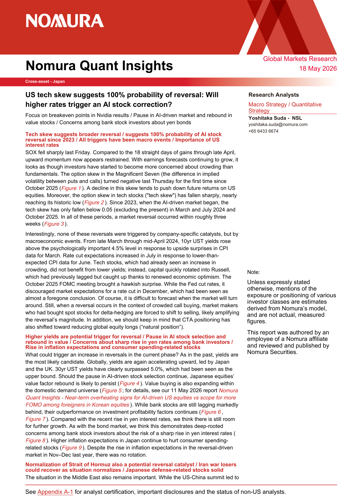
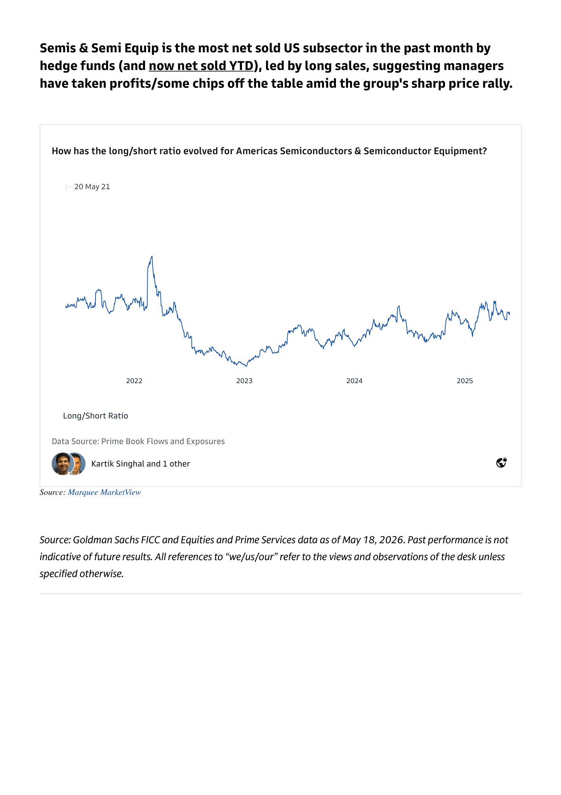
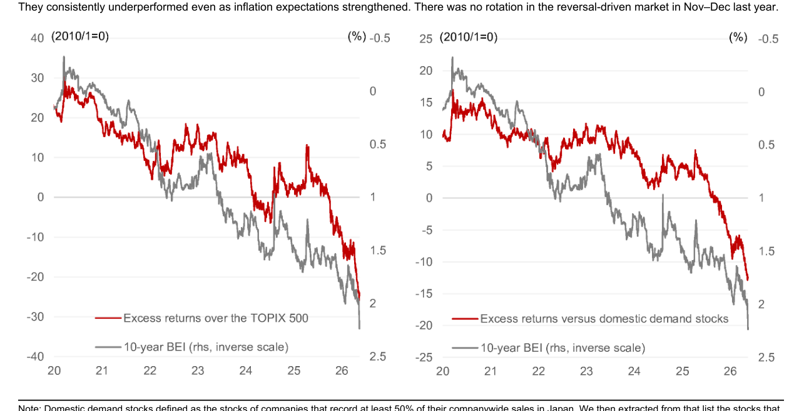
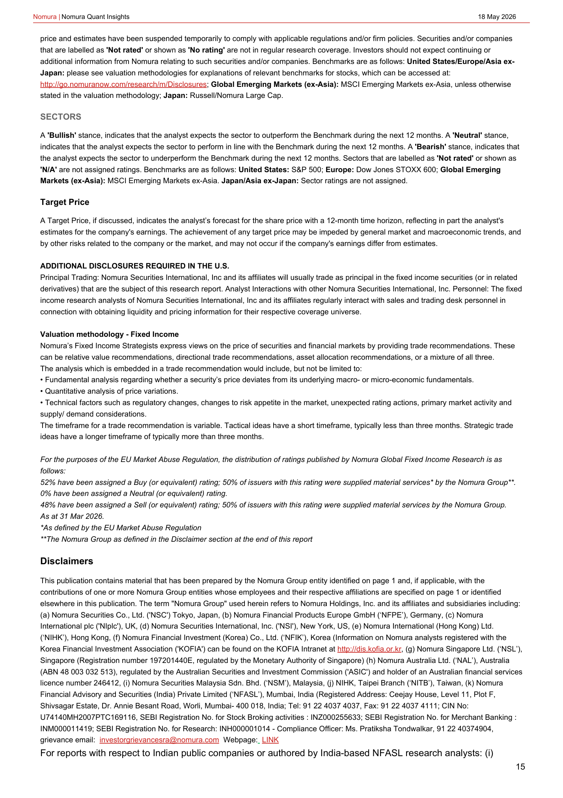
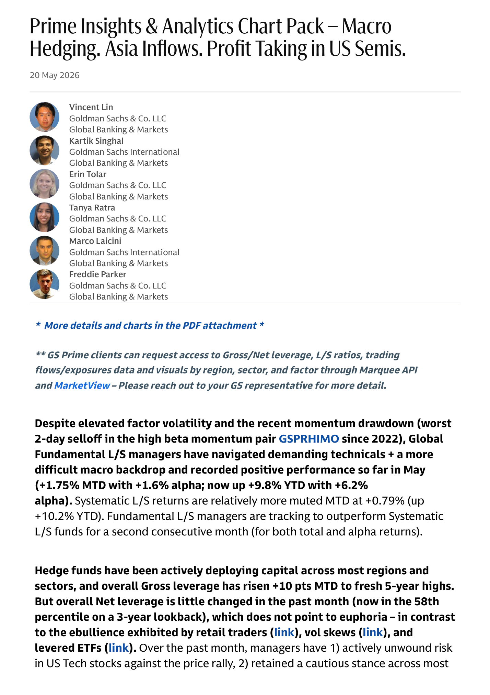
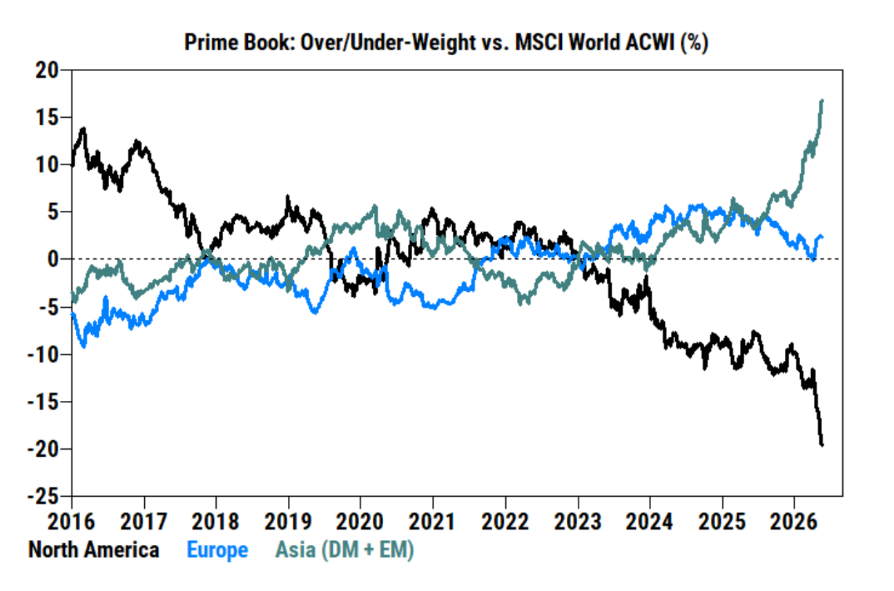

Trading_and_investment_papers plus Daily Shot when available.
Window PDFs3
Chart Extracts9
Top Charts2
Daily Shotskipped
Bottom line: This packet is the one-stop morning read: curated chart evidence first, Daily Shot context second, and source links at the end.
Top Charts
1. Options are shaping the path of the underlying
Page 1 | Nomura Quant Insights 20260518
What it says: Nomura Quant Insights 20260518: Cross-asset - Japan Nomura Quant Insights Global Markets Research 18 May 2026 US tech skew suggests 100% probability of reversal: Will higher rates trigger an AI stock correction? Focus on breakeven points in Nvidia results / Pause in AI-driven market and r...
Worldview update: The rally has become more flow-mechanical. Fundamentals still matter, but call demand, vol compression, and dealer positioning are first-order timing variables.
Portfolio/use: Favor defined-risk upside and start adding downside while hedges are ignored.

2. AI is becoming a capex, power, and politics story
Page 4 | Prime Insights Analytics Chart Pack Macro Hedging Asia Inflows
What it says: Prime Insights Analytics Chart Pack Macro Hedging Asia Inflows: Semis & Semi Equip is the most net sold US subsector in the past month by hedge funds (and now net sold YTD), led by long sales, suggesting managers have taken profits/some chips off the table amid the group's sharp price rally. Source: Goldman Sachs FICC a...
Worldview update: The AI trade is no longer only about demand and model progress. The constraint is shifting toward cash-flow intensity, grid capacity, permitting, and public tolerance.
Portfolio/use: Map AI exposure through power, grid, utilities, gas, and capex beneficiaries; be careful where capex consumes free cash flow.

Daily Shot
Daily Shot was unavailable for this run.
Additional Chart Selection
Nomura Quant Insights 20260518
2 additional extracted charts
Chart 1
Page 7 | image-block | score 0.683

Chart 2
Page 15 | page-fallback | score 0.683

Prime Insights Analytics Chart Pack Macro Hedging Asia Inflows
2 additional extracted charts
Chart 1
Page 1 | vector-cluster | score 0.694

Chart 2
Page 3 | image-block | score 0.642

Prime Insights and Analytics Chart Pack May 2026 - Marquee